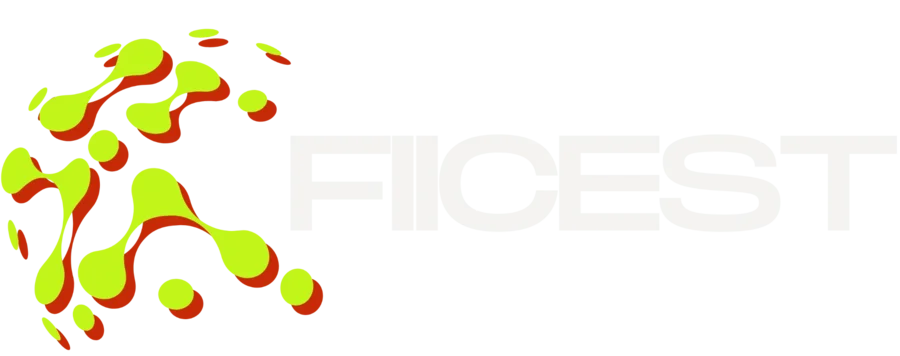

Portfólio
Carregando…
Experiência do capítulo
Onde a ciência encontra a inovação
O que a Quarks entregou, em números
A feira
Dois dias, três eixos
- 09/06 · Indústria & Inovação
Ideathon CicloInova
Equipes de três a quatro estudantes, com mentores, resolveram em um dia desafios reais de indústrias da região, com foco em economia circular.
- 09 e 10/06 · Mercado
Balcão e Painel de Negócios
Empresas apresentaram seus desafios e entrevistaram jovens talentos para estágio, contratação e parcerias.
- 10/06 · Ciência & Educação
Feira de Ciências
Stands interativos de escolas e laboratórios do IFS, sessão de banners e apresentações orais no telão de LED.
Balanço oficial da 1ª edição
Linha do tempo
Do primeiro traço da marca aos anais
Identidade aplicada
Peças e cartilhas criadas pela Quarks
Pôsteres e convites da campanha, e as cartilhas que acompanharam cada kit científico. Clique para ampliar.
Registros do projeto
Premiações e kits
Realização, fomento e parceria
Uma feira construída em rede
O que a Quarks entregou

Legado
Um site no ar, um acervo ao vivo e uma publicação
O site segue ativo até 2029 como registro histórico, as transmissões e os vídeos ficam disponíveis no YouTube, e os anais reúnem a produção científica da feira. Os kits continuam nas escolas e nos grupos premiados.